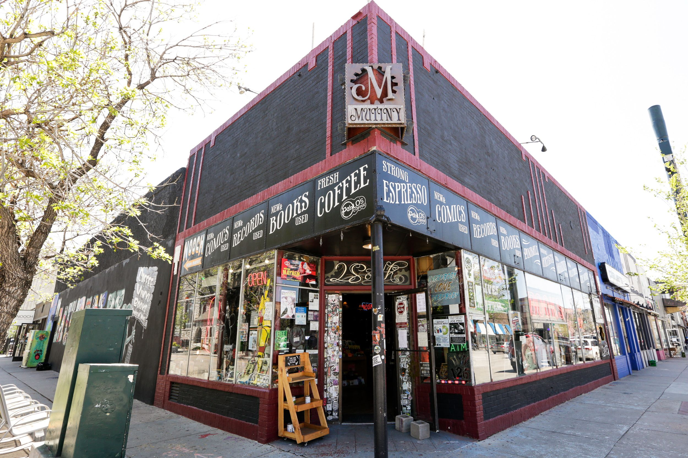

Sloan's Favorite Place: Mutiny Info Cafe
My favorite place in the world is a cafe in Denver called Mutiny. Aside from making amazing coffee Mutiny also sells used books, comics, records, and local art. They also hold local events like comedy nights, concerts, and poetry readings. They also have great baklava and bagels.